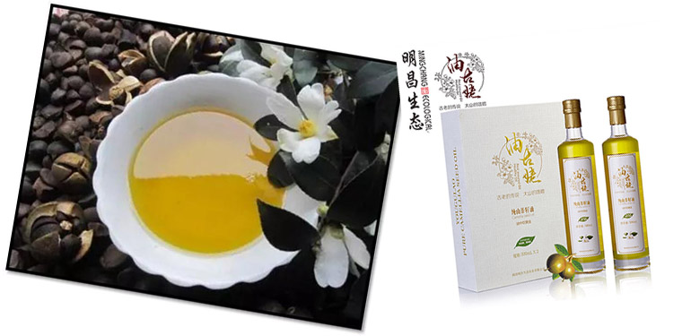
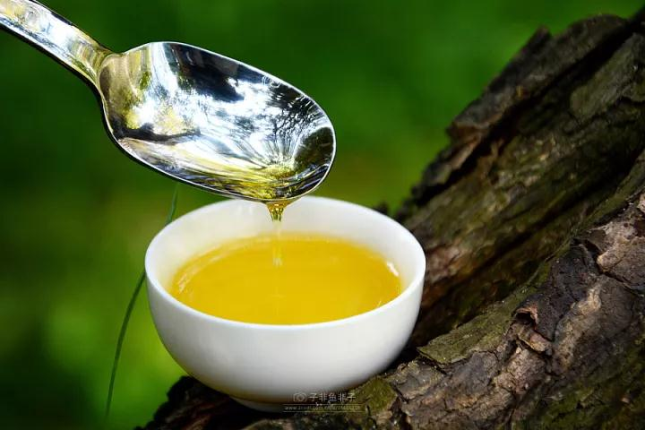

宝宝多大可以吃油？每天能吃多少？辅食用什么油做最好？初步给宝宝添加辅食的宝妈总会为这个问题苦恼。
适量吃油促进儿童脑发育
首都儿科研究所儿童营养研究室研究员吴光驰认为，油脂是人体不可缺的营养素之一，小宝宝的身体发育，以及大脑和神经的发育都需求脂肪酸的参与。对婴幼儿而言，必需脂肪酸的来历很单一，只能通过母乳和辅食来补偿。所以食用油就成了宝宝补偿不饱和脂肪酸的杰出来历。
有些宝妈认为宝宝从蛋黄、奶类、肉类中可以取得满足的脂肪，所以并不需求通过食用油来补偿营养。但植物油中的脂肪酸与动物油和肉蛋奶中的脂肪酸组成不同，其营养特征也不一样。所以如果宝宝肉蛋奶吃的比较多，那就需求通过补偿植物油来使各种脂肪酸抵达平衡情况。

宝宝多大可以吃油？吃多少？
实际上，宝宝从一出生就开始接触油脂了，妈妈的乳汁中的脂肪含量在3%-5%左右。妈妈乳汁中油脂的种类是非常丰富的，对于宝宝有非常重要的作用。
首先，母乳中的脂肪可以给宝宝提供每天需要的能量，对于母乳喂养的宝宝来说，大约50%的能量是由母乳中的脂肪提供的。
其次，母乳中的一些脂肪酸，也是宝宝神经发育的的重要保证，比如，母乳中的多种不饱和脂肪酸DHA、EPA等对宝宝的大脑发育十分重要。
6个月以后宝宝需要添加辅食，乳汁中的营养成分已经不能完全满足宝宝的营养需求，包括油脂的需要量，这时可以逐渐给宝宝添加食用油了。所以，宝宝6个月后就可以吃油啦。
.png)
宝宝吃什么油最好？
山茶油所含单不饱和脂肪酸为诸多植物油之冠。 茶油还含有的独特的生理活性物质茶多酚和山茶甙及角鲨烯，可以使宝宝提高免疫力，增强胃肠道的消化功能，促进矿剂的生成和钙的吸收，对还处于生长期的宝宝尤其重要。
除此之外，山茶油中还富含90%的油酸、亚油酸和亚麻酸三种优质脂肪酸和多种维生素、角鲨烯、茶多酚等营养元素，对宝宝生长发育非常有帮助。
.png)
宝宝吃多少油才合适？
在正常饮食的基础上，宝宝每天摄入山茶油食用油的量如下：起先加山茶油时，每天摄入半茶匙，相当于2～3毫升；8～12个月，每天摄入1茶匙，相当于5毫升；1岁以上逐渐加量。当然，宝宝越大，你拿量勺做辅食的时机就越来越少了，比大人少一些为好。
6个月至1岁：这个阶段的孩子现已初步添加辅食了，妈妈可在为宝宝制造辅食时加一点山茶油。比如在各种粥、糊糊或是小面条中，最终滴入几滴山茶油就可以了。
1岁至3岁：恰当烹饪，适度放山茶油、少吃油炸食物，给宝宝炒制饭菜时，可比大人摄入的山茶油油量少一些。
3岁至6岁：这个阶段的小朋友饮食现已和成人没什么大差别了，妈妈们要注意从现在初步培养宝宝的健康饮食观念，少吃油炸食物。